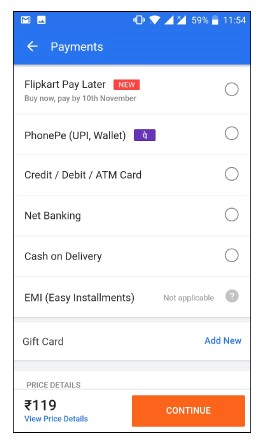

Providing several payment options enables to cater to a wide variety of customers. The more payment options have, the easier it becomes for customers to purchase from.

Offering multiple payment options can also help reduce cart abandonment rate and increase conversions.
E-commerce CMS platforms such as BigCommerce allow to choose from 65 payment gateway integrations for online payments, plus mobile and digital wallets, including PayPal and Apple Pay.
It’s easy to set payment integrations on the platform. Once you’ve chosen a payment option, enable the payment gateway, then enter credentials to make it active.
Before adding payment options to store, consider these points: